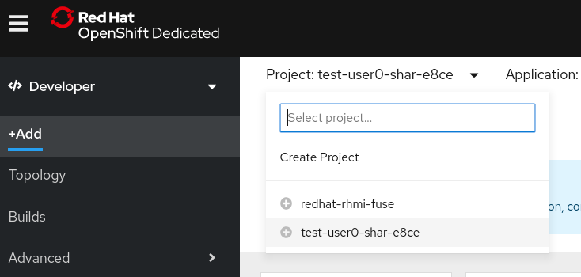

Developing Applications on Red Hat Managed Integration 2
The Managed Integration developer experience
Red Hat Managed Integration provides developers with tools and techniques to create and manage applications on a secure platform.
Developers can use Solution Explorer to access the various user interfaces available in the cluster.
If you are a new user, Red Hat recommends starting with the Solution Patterns in the All Solution Patterns tab of the Solution Explorer. These Solution Patterns introduce you to essential Managed Integration capabilities.
As a developer, you can:
-
Create and edit OpenShift projects
-
Develop applications using Red Hat CodeReady Workspaces
-
Create a realm in the Customer Application SSO instance
-
Create Fuse Online integrations and view logs
-
Create address spaces and addresses in AMQ Online
-
Edit methods, metrics, and mapping rules of the 3scale backend
If a developer needs to create products in 3scale, a cluster administrator must give that user Admin rights as described in the 3scale documentation.
| Red Hat recommends that you use an external authentication service for AMQ Online address spaces in a production environment. |
A developer can also use the OpenShift CLI tools on a local machine to interact with a Red Hat Managed Integration cluster. The client is available from the download page.
Managed Integration Projects
You can use Red Hat Managed Integration to develop and deploy cloud-native, integrated applications to your cluster as described in the OpenShift Dedicated Applications guide. Use the OpenShift Dedicated web console to complete common tasks. You can use the procedures in this guide to get started, then refer to the OpenShift Dedicated Applications guide for more details.
You can create projects to manage your development work:
-
You can create AMQ Online address space definitions in your project as described in Creating address spaces using the command line. The resulting pods are created in the
redhat-rhmi-amq-onlineproject, which is managed by Red Hat. -
If you delete the project, all associated resources are also deleted. For example, address spaces that you defined in your project are deleted.
| Sharing access to projects is described in the Applications guide. |
Creating a project using the web console
If allowed by your cluster administrator, you can create a new project.
|
Projects starting with |
-
Navigate to Home → Projects.
-
Click Create Project.
-
Enter your project details.
-
Click Create.
Creating a project using the Developer perspective in the web console
You can use the Developer perspective in the OpenShift Dedicated web console to create a project in your namespace.
|
Projects starting with |
-
Ensure that you have the appropriate roles and permissions to create projects, applications, and other workloads in OpenShift Dedicated.
You can create a project using the Developer perspective, as follows:
-
In the Add view, click the Project drop-down menu to see a list of all available projects. Select Create Project.
 -
In the Create Project dialog box, enter a unique name for the Name field. For example, enter
myprojectas the name of the project in the Name field. -
Optionally, add the Display Name and Description details for the Project.
-
Click Create.
-
Navigate to the Advanced → Project Details page to see the dashboard for your project.
-
In the Project drop-down menu at the top of the screen, select all projects to list all of the projects in your cluster. If you have adequate permissions for a project, you can use the Options menu
 to edit or delete the project.
to edit or delete the project.
Creating a project using the CLI
If allowed by your cluster administrator, you can create a new project.
|
Projects starting with |
-
Run:
$ oc new-project <project_name> \
--description="<description>" --display-name="<display_name>"
For example:
$ oc new-project hello-openshift \
--description="This is an example project" \
--display-name="Hello OpenShift"
|
The number of projects you are allowed to create may be limited by the system administrator. After your limit is reached, you might have to delete an existing project in order to create a new one. |
Viewing a project using the web console
-
Navigate to Home → Projects.
-
Select a project to view.
On this page, click the Workloads button to see workloads in the project.
Viewing a project using the CLI
When viewing projects, you are restricted to seeing only the projects you have access to view based on the authorization policy.
-
To view a list of projects, run:
$ oc get projects
-
You can change from the current project to a different project for CLI operations. The specified project is then used in all subsequent operations that manipulate project-scoped content:
$ oc project <project_name>
-
See Managing images in a Managed Integration cluster for more information on how to manage images in your cluster.
Managed Integration Builds
Red Hat Managed Integration enables you to build applications as described in the builds guide. The following topics are reproduced for your convenience.
Builds
A build is the process of transforming input parameters into a resulting
object. Most often, the process is used to transform input parameters or source
code into a runnable image. A BuildConfig object is the definition of the
entire build process.
OpenShift Dedicated uses Kubernetes by creating containers from build images and pushing them to a container image registry.
Build objects share common characteristics including inputs for a build, the requirement to complete a build process, logging the build process, publishing resources from successful builds, and publishing the final status of the build. Builds take advantage of resource restrictions, specifying limitations on resources such as CPU usage, memory usage, and build or pod execution time.
The OpenShift Dedicated build system provides extensible support for build strategies that are based on selectable types specified in the build API. There are three primary build strategies available:
-
Docker build
-
Source-to-Image (S2I) build
-
Custom build
By default, Docker builds and S2I builds are supported.
The resulting object of a build depends on the builder used to create it. For Docker and S2I builds, the resulting objects are runnable images. For Custom builds, the resulting objects are whatever the builder image author has specified.
Additionally, the Pipeline build strategy can be used to implement sophisticated workflows:
-
Continuous integration
-
Continuous deployment
Docker build
The Docker build strategy invokes the docker build command, and it expects a repository with a Dockerfile and all required artifacts in it to produce a runnable image.
Source-to-Image (S2I) build
Source-to-Image (S2I) is a tool for building reproducible, Docker-formatted
container images. It produces ready-to-run images by injecting application
source into a container image and assembling a new image. The new image
incorporates the base image (the builder) and built source and is ready to use
with the buildah run command. S2I supports incremental builds, which re-use
previously downloaded dependencies, previously built artifacts, etc.
The advantages of S2I include the following:
| Image flexibility |
S2I scripts can be written to inject
application code into almost any existing Docker-formatted container image,
taking advantage of the existing ecosystem. Note that, currently, S2I relies on
|
| Speed |
With S2I, the assemble process can perform a large number of complex operations without creating a new layer at each step, resulting in a fast process. In addition, S2I scripts can be written to re-use artifacts stored in a previous version of the application image, rather than having to download or build them each time the build is run. |
| Patchability |
S2I allows you to rebuild the application consistently if an underlying image needs a patch due to a security issue. |
| Operational efficiency |
By restricting build operations instead of allowing arbitrary actions, as a Dockerfile would allow, the PaaS operator can avoid accidental or intentional abuses of the build system. |
| Operational security |
Building an arbitrary Dockerfile exposes the host system to root privilege escalation. This can be exploited by a malicious user because the entire Docker build process is run as a user with Docker privileges. S2I restricts the operations performed as a root user and can run the scripts as a non-root user. |
| User efficiency |
S2I prevents developers from performing arbitrary |
| Ecosystem |
S2I encourages a shared ecosystem of images where you can leverage best practices for your applications. |
| Reproducibility |
Produced images can include all inputs including specific versions of build tools and dependencies. This ensures that the image can be reproduced precisely. |
Custom build
The Custom build strategy allows developers to define a specific builder image responsible for the entire build process. Using your own builder image allows you to customize your build process.
A Custom builder image is a plain Docker-formatted container image embedded with build process logic, for example for building RPMs or base images.
Custom builds run with a very high level of privilege and are not available to users by default. Only users who can be trusted with cluster administration permissions should be granted access to run custom builds.
-
See Managing images in a Managed Integration cluster for more information on how to manage images in your cluster.
Managing images in a Managed Integration cluster
Managed Integration allows you to create and push images to your cluster. For the Managed Integration cluster, the registry is located at:
registry.<cluster-suffix>
where <cluster-suffix> is the unique sub-domain for your cluster, for example, example.u7y2.s1.openshift.com
-
Use the instructions in the registry documentation to access the registry.
-
Follow the procedures for managing images.
Adding Solution Patterns to your Managed Integration cluster
The home page of the Solution Explorer lists the Solution Patterns from all the Git repositories you are subscribed to. Any developer can add Solution Patterns to your cluster.
This procedure describes how to subscribe your cluster to a Git repository that contains Solution Patterns.
-
Navigate to the Solution Explorer.
-
Click the gear icon in the top right to display the Application settings screen.
-
Enter the URLs of the Solution Pattern Git repositories you want to add to your cluster using the following syntax:
https://github.com/<org>/<repo>.git
where
<org>is the name of your GitHub organization and<repo>is the name of your repository.-
List URLs in the order you want them to appear in the Solution Explorer.
-
Enter one URL per line.
-
To include a specific branch, append #<branch-name> to the url. For example:
https://github.com/<org>/<repo>.git#version-one
-
-
Click Save.
This triggers an automatic refresh of the Solution Explorer.
-
When the deployment is complete, refresh your browser.
You should now see new Solution Patterns available from the dashboard.
-
If the Git repository is updated with new content, the Solution Explorer is not automatically updated.
Refresh the Solution Explorer to view the changes:
-
Click the gear icon in the top right to display the Application settings screen.
-
Click Save to trigger a refresh of the Solution Explorer app.
-
When the Solution Explorer refresh is complete, refresh your browser.
-
Navigate to the Solution Patterns tab to see the updated content.
-
| You can access the Git repository that contains the Solution Pattern source code by clicking the Repository link located in the upper right corner of each group of Solution Patterns on the All Solutions Patterns tab in the Solution Explorer. |
-
To learn more about creating solution patterns, see the Creating Solution Patterns documentation.